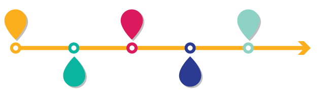

This website was created in 2019 for a college class project. The webpage is still currently a work in progress and I will be using my knowledge from class to update it.
Welcome to the Drum Domain.
A website with the purpose of serving information for those who would like to learn about the history of the modern day drumkit, or how to hit skins and be decent at it. As this website progresses, new and exciting page will be opening up. I would like to teach as many people about this wonderful and amazing hobby of mine.
The drum is a musical instrument that has been around for thousands of years. It is still one of the most popular parts of music today. Drums are also known as membranphones and are speculated as the oldest known instrument that the human race learned to use. Drums are made up of a membrane which is stretched over a open cylinder, which when struck vibrate the air waves inside the shell. Below is a timeline depicting the history of the drum.
Timeline:

5500 B.C.
The earliest records of drums, 5500 B.C., China would use aliigator skin tied to wooden shells to be used during religious rituals and ceremonies.
1100 B.C.
Flat pieces of metal were fabricated for pleasant tinkling and dinging sounds in the Middle East.
500 B.C.
The talking drums of Africa and warning drums of Sri Lanka, are used in a way of communication, giving a new meaning to the drum for the rest of history. African drums make thier way to present day Greece and Rome.
1200 A.D.
During the Crusades, the Mediterranean opened new trade routes, bringing new influnence from the Middle East and Asia to Genoa and Venice, Italy. Drums were among the commodities brought over.
1450-1600 A.D.
Drums begin to be used in war time. Large expansions of these percussion instruments are used to signal attacks or to strike intimidation into enemy forces. African drums are brought over to the Americas by the slave trade. Percussion instruments such as long drums, snares, jingle bells, and tambourines begin to be used in Renaissance festivals.
1820 A.D. - Modern Day
Invention of the gong, vibraphone, small snare, and kettle drum. These instruments become popular with professional musicians and composers, which brings the percussion instuments into popular and complicated orchestra pieces. In 1909 the first Patent for the foot pedal and professional drum kit comes to light. Throughout the 1900's, cymbals, larger kits, and even the double bass pedal appear with modern day professional kits. It wasn't until technology grew, that in 1973, Karl Bartos invented the electric drum set which allowed digital recordings of drum rhythm's to be used with computer systems.
Want to know more?
Checkout my history page here.
Drumming Basics
So you want to learn how to play the basics? Click the button above for links to video tutorials. All videos are provided by Drumeo, (formerly free drum lessons). You can find the sheet music for each lesson in the video description.